Requisitos: Tener el arco normal.
Conseguir la flecha de fuego: Tendremos que ir a la parte alta de la torre del reloj y disparar con el arco al símbolo rojo de la pared.
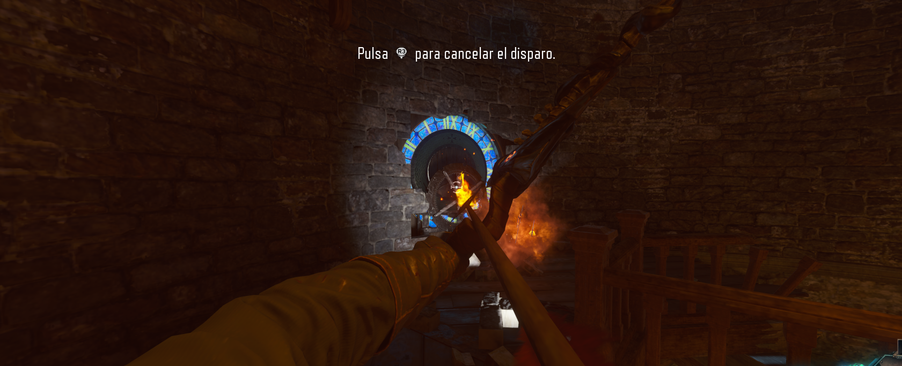
Esperar a las pruebas del cohete: Una vez acaben las pruebas del cohete y se abran las puertas, tendremos que disparar rápidamente al la piedra caliente a la izquierda de las puertas.
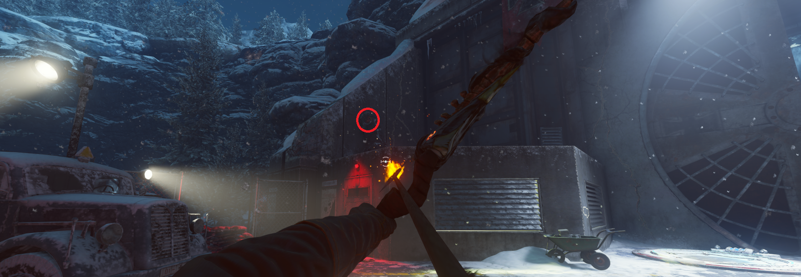
Si hemos acertado un rayo cargará la bola de fuego en el centro del castillo.
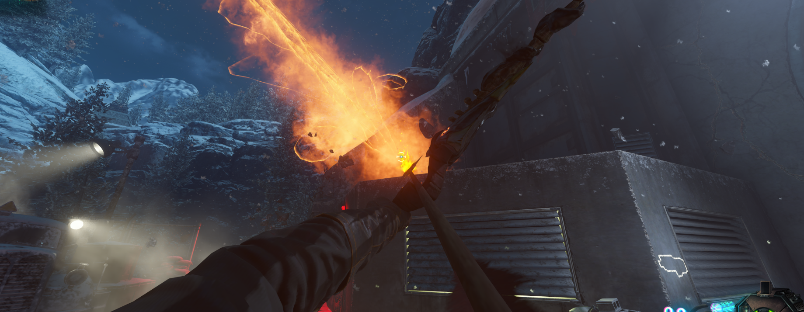
Disparos desde el aire:Tendremos que ir a las tres lanzaderas del mapa y en el aire disparar a los círculos de fuego.
El primer círculo: desde la lanzadera del cohete hasta el spawn, el círculo estará en la zona del Doble-Tap. También se puede hacer desde la zona de la trampa eléctrica hasta el cohete.
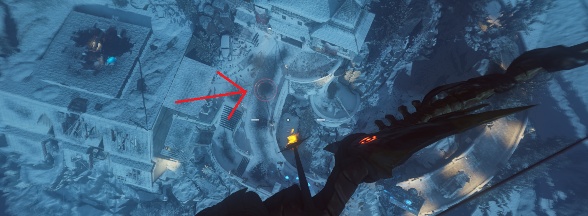
El segundo círculo: desde la lanzadera de la zona alta del Doble-Tap hasta la torre del reloj, el círculo estará justo donde aterrizamos.
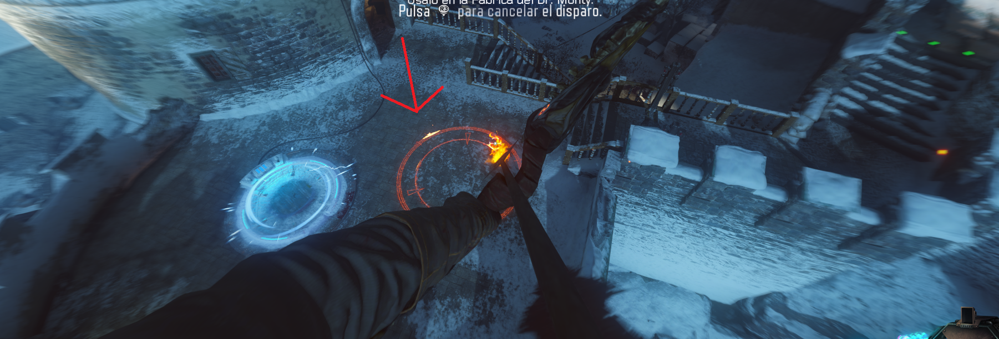
El tercer círculo: desde la lanzadera del patio (bajo la torre del reloj) hasta la zona alta del Doble-Tap, el círculo estará en la trampa eléctrica.
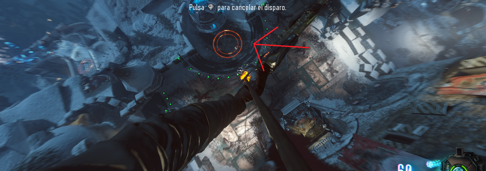
Cargar los círculos: Ahora tendremos que ir a los tres círculos y ,situándonos encima de ellos, mataremos zombies para que estos se carguen.
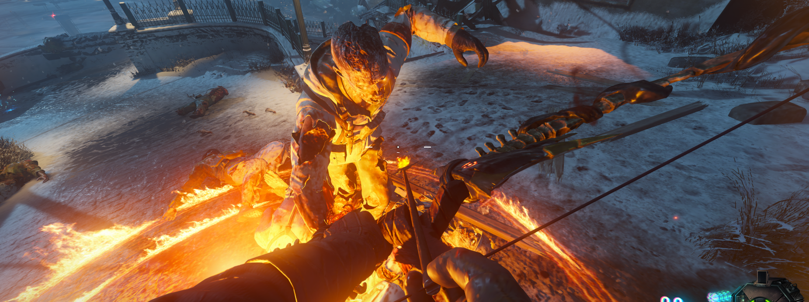
Torre del reloj: Una vez cargados, iremos a la torre del reloj e interactuaremos con el reloj. Este se empezará a mover y aparecerá un símbolo que tendremos que memorizar.
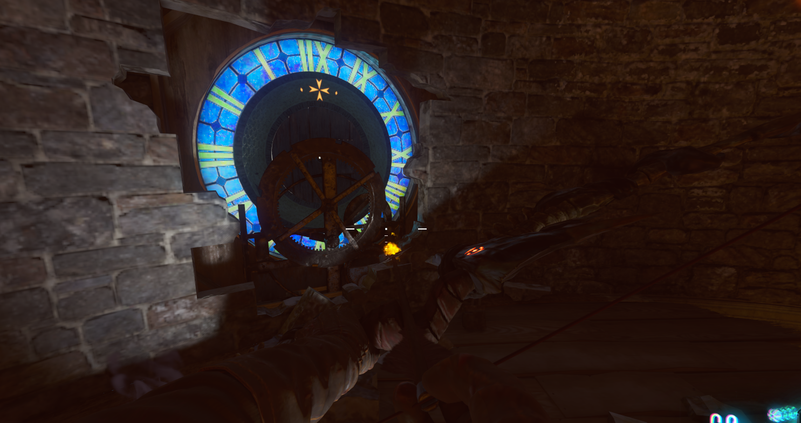
Chimeneas y círculo: Uno de los círculos anteriores se volverá a cargar y tendremos que buscar la chimenea con el símbolo del punto anterior(el símbolo se encontrará dentro). Aquí las localizaciones de las chimeneas.
Chimenea 1: Debajo del segundo dragón.
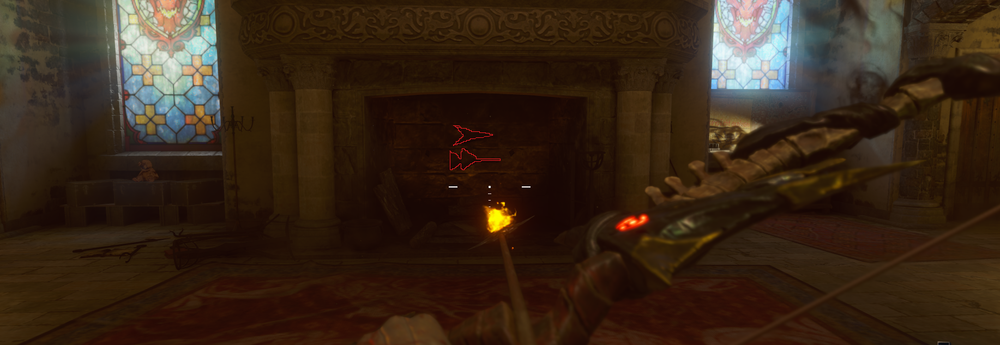
Chimenea 2: Cruzando el puente de la zona del primer dragón, en la primera habiración a la derecha.
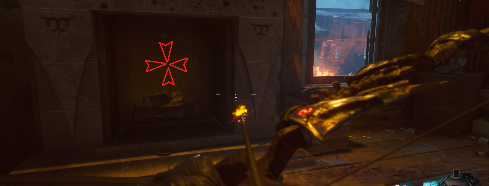
Chimenea 3: En el cuarto que está subiendo las escaleras de la zona del primer dragón (donde se encuentra una máquina de chicles).
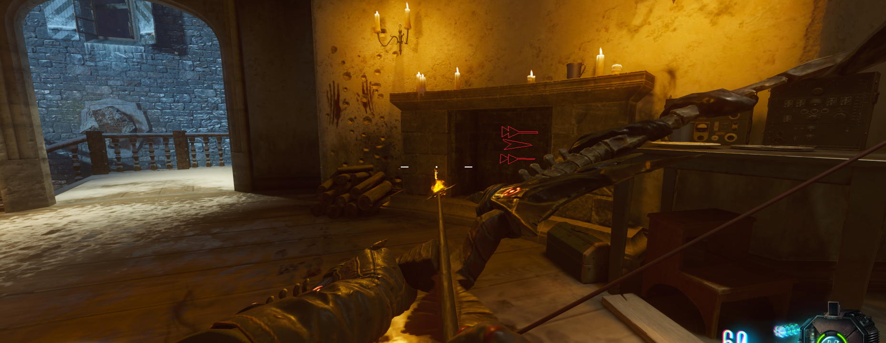
Volcanes: Una vez localizado el círculo activo y la chimenea con el símbolo que necesitamos, nos situaremos encima del círculo y dispararemos una flecha en la dirección en la que se encuentra la chimenea.
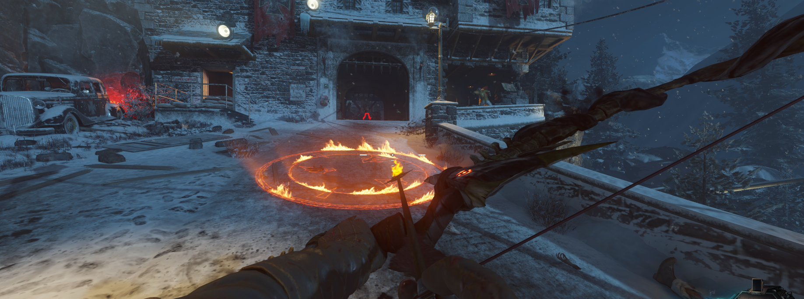
De esta manera crearemos un volcán en el suelo desde el que, situándonos encima, podemos diparar y crear otro.
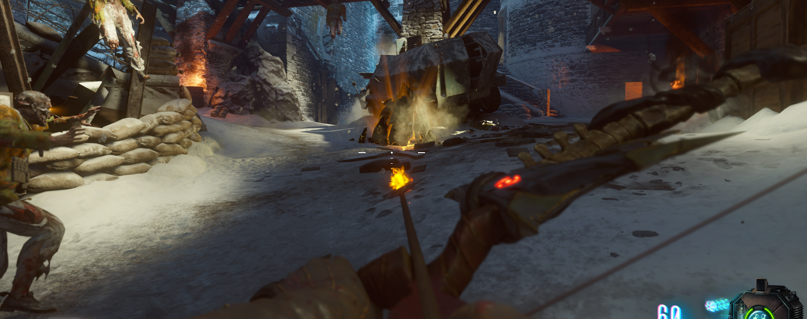
La idea es que con un máximo de 3 volcanes, tendremos que llegar a ver la chimenea y así poder dispararle con una cuarta flecha. Si fallamos, tendremos que pasar de ronda e intentarlo otra vez.
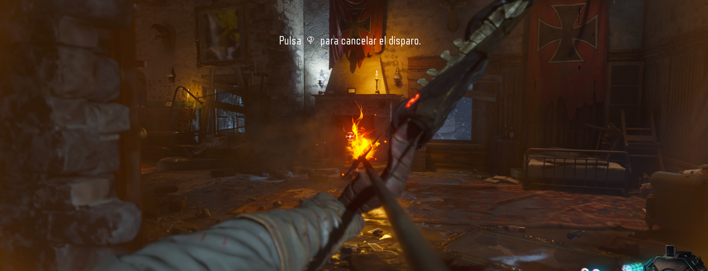
Si todo ha salido bien, un humo rojo saldrá de la chimenea y tendremos que interactuar con ella.
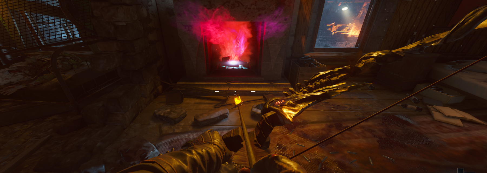
Ahora tendremos que ir a la bola de fuego de la trampa tesla y saltando interactuamos con ella. La flecha aparecerá tras una explosión.
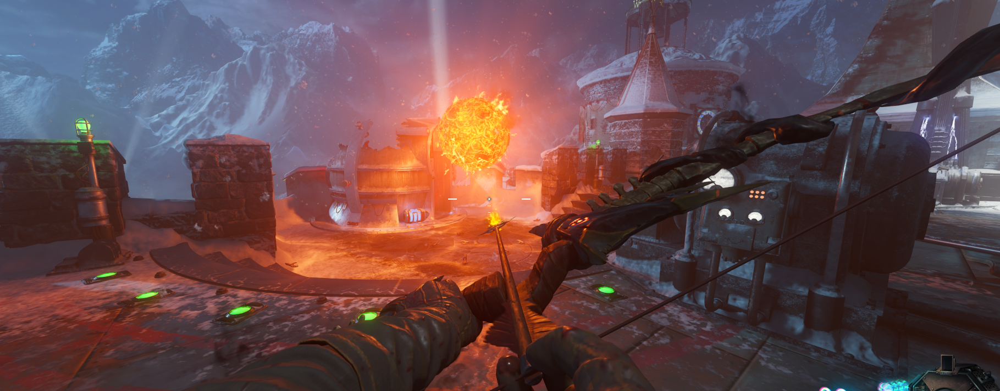
Colocar flecha:Bajaremos a la zona de la pirámide y colocaremos la flecha en si cofre corresponfiente.
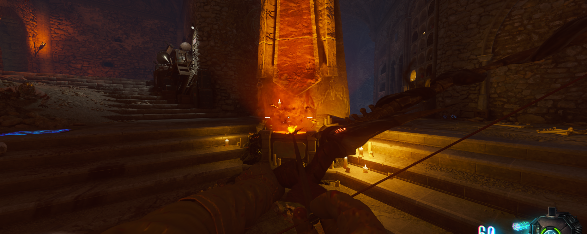
Final arco:Una vez matemos suficientes zombies, la flecha se cargará y nos darán el arco mejorado.
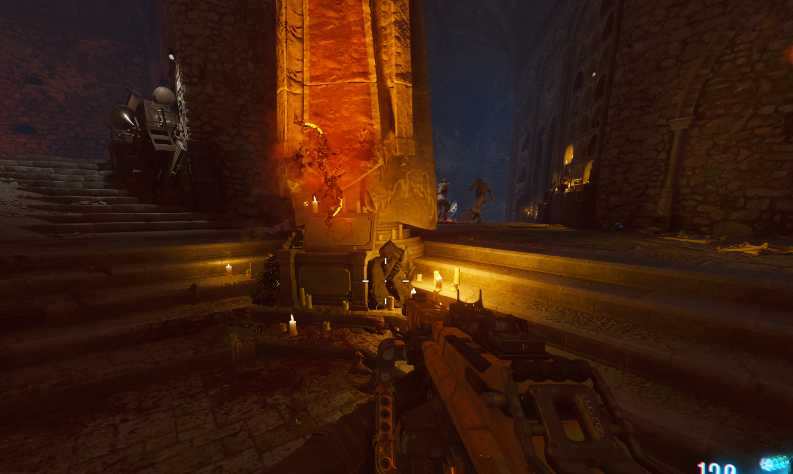